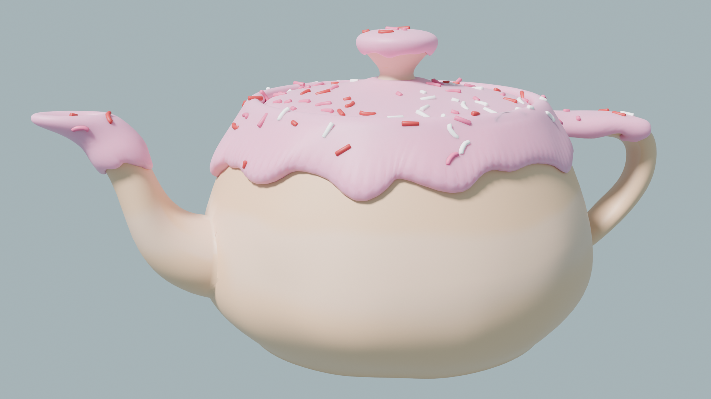

Starting to Write Things Down...
Hi there! I've decided to start a blog of sorts as a way to put down what I'm working on at any given moment. I've had a list of projects with zero documentation on my behalf, and I'd like a way to keep track of what I've been doing. At the moment, I am learning how to use blender for 3d modeling and Godot for game development with those models.
Blender was a really daunting program to use at first, I had originally tried learning how to grapple with it a year or so ago to little avail. I followed along with the Blender Guru donut tutorial for a good bit, but ultimately dropped the project. I more recently picked the tutorial up again and found the tools to be less intimidating than they were previously. The first thing I did after finishing the tutorials was make a silly teapot donut :p. I'm using Blender now to try and design game assets in styles I'd like to get better at, particularly the styling of the Petscop series, which mimics a PS1 aesthetic of 3D games I'd love to learn how to replicate. The whole process is much easier than I thought it'd be, which is really exciting!! I hope to be in a position soon where I can devote a lot of time to this, at the moment any progress comes in brief spurts between other living necessities.
There's a lot of other creative endeavors I would love to sink time into, and hopefully I will get to write about them in the future, but for now I plan to focus on Blender and Godot, and hopefully get something cool out of it. A fun secondary benefit of this blog is that I get to experiment with cool web design stuff like modularizing posts and adding comment sections. Now go, rambling wall of text, and join the interwebs...